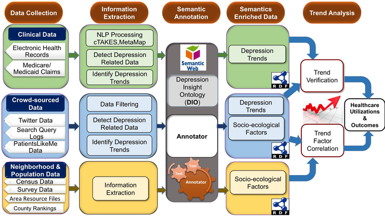

<!DOCTYPE html>
<html lang="en">
<head>
	<meta charset="utf-8">
	<meta name="viewport"    content="width=device-width, initial-scale=1.0">
	<meta name="description" content="">
	<meta name="author"      content="Sergey Pozhilov (GetTemplate.com)">

	<title>Amir Hossein Yazdavar, Data Semantics Lab, Kansas state university</title>

	<link rel="shortcut icon" href="assets/images/gt_favicon.png">

	<!-- Bootstrap -->
	<link href="http://netdna.bootstrapcdn.com/bootstrap/3.0.0/css/bootstrap.no-icons.min.css" rel="stylesheet">
	<!-- Icons -->
	<link href="http://netdna.bootstrapcdn.com/font-awesome/4.0.3/css/font-awesome.css" rel="stylesheet">
	<!-- Fonts -->
	<link rel="stylesheet" href="http://fonts.googleapis.com/css?family=Alice|Open+Sans:400,300,700">
	<!-- Custom styles -->
	<link rel="stylesheet" href="assets/css/styles.css">

	<!--[if lt IE 9]> <script src="assets/js/html5shiv.js"></script> <![endif]-->
</head>
<body class="home">

<header id="header">
	<div id="head" class="parallax" parallax-speed="2">
		<h1 id="logo" class="text-center">
			
			<span class="title">Amir Hossein Yazdavar, Ph.D.</span>
			<span class="tagline">(Advised by <a href="http://www.pascal-hitzler.de/">Prof. Pascal Hitzler  </a>,  <a href="https://daselab.cs.ksu.edu//"> 
Data Semantics Lab, Computer Science & Engineering, Kansas State University) </a><br>

		</h1>
	</div>

	<nav class="navbar navbar-default navbar-sticky">
		<div class="container-fluid">

			<div class="navbar-header">
				<button type="button" class="navbar-toggle" data-toggle="collapse" data-target="#bs-example-navbar-collapse-1"> <span class="sr-only">Toggle navigation</span> <span class="icon-bar"></span> <span class="icon-bar"></span> <span class="icon-bar"></span> </button>
			</div>

			<div class="navbar-collapse collapse">

				<ul class="nav navbar-nav">
					<li class="active"><a href="index.html">Home</a></li>
					<li><a href="publications.html">Publications</a></li>
					<li><a href="projects.html">Projects</a></li>
					<li><a href="Media.html">Media</a></li>
					<li><a href="services.html">Services</a></li>
						<li><a href="Skills.html">Skills</a></li>
						<li><a href="Courses.html">Courses</a></li>
							<li><a href="Awards.html">Awards</a></li>
					<li><a href="Contact2.html">Contact</a></li>
				</ul>

			</div><!--/.nav-collapse -->
		</div>
	</nav>
</header>

<main id="main">

	<div class="container">


				<b>Projects:</b>
				<hr>
				<b> 2020-Summer: </b></br></br>
				<b><a href= https://www.bosch.us/our-company/bosch-in-the-usa/sunnyvale/>Bosch Research, Sunnyvale, US</a><b>
				  </br>
				  </br>
				  </br>
				Keywords: Knowledge based construction/management. Developing
techniques of data collection, refinement, validation,
and alignment for Conversation Understanding and Personalized
Dialogue.
 </br><hr>
 <b> 2019-Summer & 2020 Fall: </b></br></br>
 <a href= https://weill.cornell.edu/>Weill Cornell Medicine, Cornell University, Newyork, US</a>
  </br>
				  </br>
				  </br>
 
 Keywords: Health Data Sceince, Deep Learning for Health,
NLP, ML/Deep learning, EHR, Decision Making, Precision
Medicine, Clinical Depression, CDRN, SQL
</br>
This study applied a retrospective case-control study design on
data from the New York City Clinical Data Research Network
(NYC-CDRN), a data repository containing longitudinal clinical
data elements from over 10 million patients across 22 healthcare
partners in NYC, including Columbia University, Montefiore
Medical Center, Mount Sinai Health System, New York
University Langone Medical Center, NewYork-Presbyterian,
Weill Cornell Medical College, and the Clinical Directors Network
that entered locally into the individual site’s Electronic
Health Record (EHR).
</br>
Predicting incident psychiatric hospitalization among patients
with recent mental illness
</br><hr>
	<b> 2018-Summer: </b></br></br>
	<a href= https://www.nlm.nih.gov/ >National Institute of Health(NIH), National Library of
Medicine (NLM), Bethesda, US</a>
 </br>
				  </br>
				  </br>
 Keywords: NLP, Knowledge Representation, Deep Learning,
Sequence Labeling, Contextual Ontology Alignment, Medical
Concept Embedding, Pharmacovigilance, adverse drug reactions
(ADRs)
</br>
 Research and develop an algorithm for representing FDA approved
Knowledge Base (MedDRA) and MESH ontology in the
same vector space model while enriching MESH concepts with
contextual data (Medline) to facilitate interoperability.
</br><hr>

				<b>2017-Summer:</b></br></br>
				<a href="https://www.isi.edu/">
				<b>Information Sciences Institute (ISI), University of Southern California (USC)</a></b></br>
				<a href="http://usc-isi-i2.github.io/effect/"><b>EFFECT</a></b>:
				Research/develop a robust big data platform to find traces of early planning activity
by malicious actors, from unconventional sources including dark web and social media sites,
forum discussions unstructured natural language text, structured data, and public network
traffic data, and analyze these data streams to generate warnings of pending cyberattacks.

</br></br>Keywords: Deep Learning/Machine Learning, Social Media Analysis, Natural Language Pro-
cessing, Psychological assessment


				<br>
				<br>


				<hr>
				<b>2015: Now</b></br></br>
				<a href= "https://www.k-state.edu/">
				<b>Data Semantics Lab, Computer Science & Engineering, Kansas State University</a></b></br>
				<b>Modeling Social Behavior Depression</b>:
				Depression is one of the most common mental disorders in the U.S. and is the leading cause of disability affecting millions of Americans every year. Successful early identification and treatment of depression can lead to many other positive health and behavioral outcomes across the lifespan. This project will apply “big data” techniques and methods for identifying combinations of online socio-behavioral factors and neighborhood environmental conditions that can enable detection of depressive behavior in communities and studying access and utilization of healthcare services.


			</br></br>Keywords: Data Science ,Deep Learning/Machine Learning, Semi-supervised modeling, User Modeling, Social Media Analysis, Natural Language Processing, Psychological assessment, Topic Modeling, Big data, Spark, Elastic Search
				<br>
				<br>
				<br>

				<p align="center"></p>


				<br>

				<b>Fall 2016:</b></br></br>
				<a href="https://ieeexplore.ieee.org/abstract/document/8070926"><b>Twitris 3.0 – Sentiment Analysis for Analyzing Presidential Election:</a></b>:
				In this project,
we utilize the state of the art deep learning and machine learning techniques to monitor/study
user’s sentiment during US 2016 presidential election. This was one of the several components
that allowed us to correctly predict the <a href= "http://www.whio.com/news/local/wsu-researchers-monitored-twitter-predict-trump-victory/pdPJiwLFxNKCH5J7zER9BJ/">election outcome</a>.

	<br>
		<br>


				<a href= "https://corescholar.libraries.wright.edu/cgi/viewcontent.cgi?referer=https://scholar.google.com/&httpsredir=1&article=2520&context=knoesis">
				<b>Gender-Based Violence in 140 Characters or Fewer:A #BigData Case Study of Twitter:</a></b>
				Humanitarian and public institutions are increasingly relying on data from social media sites to measure
public attitude, and provide timely public engagement. Such engagement supports the exploration of
public views on important social issues such as gender-based violence (GBV). In this study, we examine
Big (Social) Data consisting of nearly fourteen million tweets collected from the Twitter platform over a
period of ten months to analyze public opinion regarding GBV, highlighting the nature of tweeting
practices by geographical location and gender. The exploitation of Big Data requires the techniques of
Computational Social Science to mine insight from the corpus while accounting for the influence of both
transient events and sociocultural factors. We reveal public awareness regarding GBV tolerance and
suggest opportunities for intervention and the measurement of intervention effectiveness assisting both
governmental and non-governmental organizations in policy development.
				<br>
				<br>
				<b>Previous Projects: (University Technology Malaysia, Shiraz University)</b>
					<hr>


				<b>New Implicit Opinion Mining Model For Drug Effectiveness And Side Effect
Recognition In Medical Reviews</b>.Universiti Teknologi Malaysia (UTM) Faculty of Computing, Johor, Malaysia(Vote no: R.J130000.7828.4F373, RM81000,2013-2014)
<br><br>

Working on understanding patient’s sentiment on online social media platforms including medical
forums and studying drug effectiveness and side effect in unstructured user generated content by
developing fuzzy based statistical models.

Keywords: Machine Learning, Social Media Analysis, Natural Language Processing, Fuzzy Modeling,
Supervised approach</br></br>
 <b>3D Scanners, Stereo matching, Segmentation, 3D Reconstruction, Image processing</b> Innovation Center of Shiraz University, Shiraz, Iran,2010-2011,


		 <!-- / section -->


	</div>	<!-- /container -->

</main>

<footer id="footer">
	<div class="container">
		<div class="row">
			<div class="col-md-3 widget">
				<h3 class="widget-title">Contact</h3>
				<div class="widget-body">
					<p>Email:  yazdavar[at]gmail[dot]com <br>


				</div>
			</div>

			<div class="col-md-3 widget">
				<h3 class="widget-title">Follow me</h3>
				<div class="widget-body">
					<p class="follow-me-icons">
						<a href="https://twitter.com/yazdavar"><i class="fa fa-twitter fa-2"></i></a>
						<a href="https://www.linkedin.com/profile/preview?locale=en_US&trk=prof-0-sb-preview-primary-button"><i class="fa fa-linkedin fa-2"></i></a>
						<a href="https://www.facebook.com/daselab"><i class="fa fa-facebook fa-2"></i></a>
					</p>
				</div>
			</div>

			<div class="col-md-3 widget">
				<h3 class="widget-title">About Data Semantics (DaSe) Laboratory</h3>
				<div class="widget-body">
					<p><a href="https://daselab.cs.ksu.edu/">Data Semantics (DaSe) Laboratory</a> is research lab undertaking research in applied and theoretical topics in the broad areas of Artificial Intelligence and/or Data Science. It brings together researchers from Kansas State University, and industry in the pursuit of knowledge and applications related to artificial intelligence and data science <a href="https://www.k-state.edu/">Kansas State University</a> that performs world-class research on translating information to meaning.</p>

				</div>
			</div>

			<div class="col-md-3 widget">
				<h3 class="widget-title">Postal Address</h3>
				<div class="widget-body">

						2224 Engineering Hall
1701D Platt St.
Manhattan, KS 66506
USA</p>
				</div>
			</div>

		</div> <!-- /row of widgets -->
	</div>
</footer>


<!-- JavaScript libs are placed at the end of the document so the pages load faster -->
<script src="http://ajax.googleapis.com/ajax/libs/jquery/1.10.2/jquery.min.js"></script>
<script src="http://netdna.bootstrapcdn.com/bootstrap/3.0.0/js/bootstrap.min.js"></script>
<script src="assets/js/template.js"></script>
</body>
</html>
